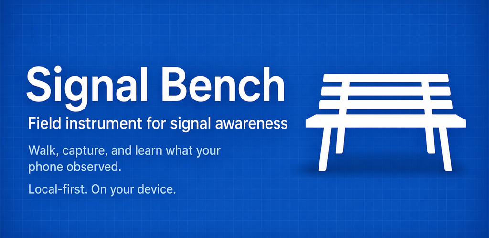

Signal Bench — Privacy Policy
Last updated: 2026-07-01
Overview
Signal Bench is a passive field telemetry tool for Android. When you start a Walk Capture, it records what your phone's built-in sensors observe — nearby signal counts, motion, environmental conditions, and location quality — and stores that data locally on your device.
Your session data never leaves your device. However, the app's map view and AI features make outbound network requests to third-party services, which is described in detail below.
Information the developer collects
We do not collect any personal information.
Signal Bench has no backend. No session data, sensor observations, or user information is transmitted to us, stored by us, or shared with any party by us.
On-device session data
When you start a Walk Capture, Signal Bench reads from your device's sensors and stores the following locally:
- Counts and signal strength of nearby Bluetooth advertisements (not device contents)
- Counts and signal strength of nearby Wi-Fi network broadcasts (not network content or traffic)
- Cellular network type and signal strength (not call content or contacts)
- Motion readings from accelerometer and gyroscope
- Environmental readings from pressure, light, proximity, and magnetic field sensors
- Location quality indicators (fix availability and accuracy; precise coordinates are not stored by default)
This data is stored only in the app's private directory on your device. You can delete it at any time from within the app.
Identifier masking
By default, Signal Bench masks hardware identifiers before storing them:
- Bluetooth device addresses are stored in masked form (e.g., ••:••:XX)
- Wi-Fi BSSIDs are stored in masked form (e.g., ••:••:XX)
- Precise GPS coordinates are not stored in Redacted or Summary mode
If you choose Detailed export mode, a warning is shown before the export is written explaining what additional data will be included.
Third-party network requests
Although Signal Bench does not transmit your session data, the app makes outbound network requests to two third-party services. These requests do not include your session data, sensor observations, or any identifier from Signal Bench.
Map tile downloads (MapLibre / OpenFreeMap)
Signal Bench includes an offline field map powered by MapLibre, an open-source mapping SDK. When the map view is open and an internet connection is available, MapLibre fetches map tiles from the configured tile server. By default this is OpenFreeMap (tiles.openfreemap.org).
Each tile request includes your device's IP address (as with any HTTP request) and the map tile coordinates (which reveal the approximate area of the map you are viewing). OpenFreeMap's privacy practices are governed by their own privacy policy. Signal Bench does not receive or store any information from these tile requests. Map tiles are cached on-device for offline use.
To avoid tile requests entirely, do not open the map view, or use the app in airplane mode after tiles have been cached.
AI model download (ML Kit Gemini Nano)
Signal Bench uses Google's ML Kit to run on-device AI analysis of session data. Before this feature can work, the Gemini Nano model must be downloaded to your device. This download is handled by Google's ML Kit infrastructure and is governed by Google's Privacy Policy.
The model download is a one-time event. After the model is available on your device, AI inference runs locally with no further network requests. Signal Bench does not send session data to Google or any external service for AI processing.
Information we do not collect
- We do not collect your name, email, or any account information
- We do not collect precise GPS coordinates (in any default mode)
- We do not collect the content of any Bluetooth device or Wi-Fi network
- We do not collect call records, contacts, or messages
- We do not collect photos, videos, or audio
- We do not track your location across sessions
- We do not use analytics, advertising SDKs, or crash reporting services
- We do not read data from other apps on your device
- We do not receive or store any data from map tile requests
- We do not receive or store any data from the ML Kit model download
How your session data is used
Your on-device session data is used only to:
- Display session results to you within the app
- Generate exports that you explicitly request
- Provide on-device AI insights (processed locally; data does not leave your device for AI inference)
Signal Bench does not use your session data to train AI models, improve any external service, target advertising, or for any other purpose beyond displaying your own results to you.
Data sharing
Signal Bench does not share your session data with any third party. Export files you create and share using your device's share sheet are under your control.
Data storage and deletion
Session data is stored in the app's private directory on your device. This data:
- Is not accessible to other apps without your device being rooted
- Is deleted when you uninstall Signal Bench
- Can be deleted at any time from within the app
How to delete your data
- Delete one session: Sessions tab → tap session → overflow menu (⋮) → "Delete session…" → confirm
- Delete all sessions: Sessions tab → overflow menu (⋮) → "Delete all sessions…" → confirm
Both actions permanently delete data from your device. Export files you have already saved outside the app must be deleted separately.
Children's privacy
Signal Bench is not directed at children under 13 and we do not knowingly collect any information from children.
Changes to this policy
If we update this policy, we will update the "Last updated" date above and note significant changes in the Play Store release notes.
Contact
For privacy questions, contact the project maintainer via the contact information in the Google Play Store listing.